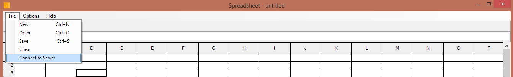
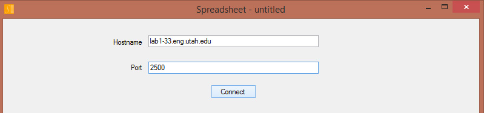
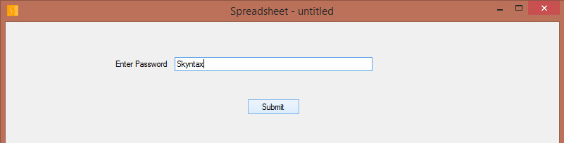
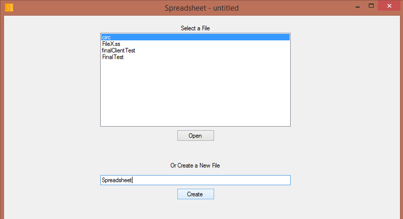
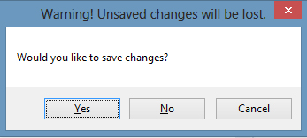
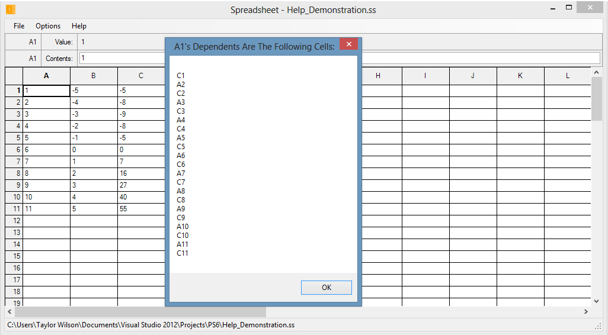
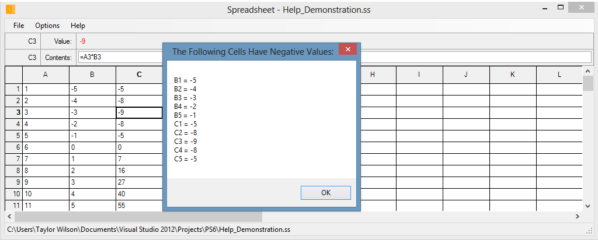

Connect to Server
To open a file from the server, you may select File > Connect to Server.

This will prompt a window to input a hostname (or IP address) and a port number for the server you wish to connect to.

You will then be prompted with a form to enter the password for the server you are connecting to. The password for our server is "Skyntax".

You may then select an existing file or create a new file to beging editing a spreadsheet on the server.

Keyboard Shortcuts
| Instruction | Keyboard Shortcut | Instruction Description |
|---|---|---|
| Start A New Spreadsheet | Ctrl + N | Opens A New Form Window Containing A Blank Untitled Spreadsheet. |
| Open a Spreadsheet From File | Ctrl + O | Prompts User To Select A Spreadsheet File To Open. Opens In New Form Window. |
| Save Current Spreadsheet To File | Ctrl + S | Prompts User To Input A File Name Of Which The Spreadsheet Will Be Saved. |
| Display Dependents | Ctrl + Shift + D | Opens A Message Box Displaying All Cells Dependent Of Selected Cell. |
| Show All Negatives | Ctrl + Shift + N | Opens A Message Box Displaying All Cells Whose Values Are Negative Numbers. |
| View Help | F1 | Opens The Help HTML File. |
| Undo | Ctrl + Z | Undoes the most recent update. Must be connected to server for Undo. |
The image above is a visual representation of how the Spreadsheet Form will look. Notice that the text labels in the Menu bar have underlined letters. These provide an additional mechanism for navigating through the Menu bar. Simply press the Alt key followed by the underlined letter in the Menu bar. For example, to Save the Current Spreadsheet, press [Alt + F, S] and a prompt will appear in which a file name and location can be chosen. The name of the current Spreadsheet is always visible. Notice the the title of the Form window says "Spreadsheet - untitled". In this case, untitled is the name of the Spreadsheet. Untitled is the default name for a new spreadsheet; it signifies that the current Spreadsheet has not been saved. When the Spreadsheet is saved, its file name will be displayed in the Form's title. The full path of the current Spreadsheet is also presented in the Status Strip at the bottom of the Form window. In the image below, the Form will display the full path of the Spreadsheet with the file name "Help_Demonstration.ss" in the Status strip.

Safety Features
Before closing the Spreadsheet Form, this application performs a data integrity safety check. If closing the Form will result in the loss of any data, the user will be prompted to Save, or continue to close without saving, or cancel the closing process of the application. The image below illustrates the dialog that will be prompted to the user while closing an unsaved Spreadsheet Form. If the client is connected to the server, the closing the Spreadsheet Form will automatically send the server a DISCONNECT message.
Additional Features
There are two functions in the Option menu: Display Dependents and Show All Negatives. These functions operate as their names suggest. Display Dependents finds all the cells in the Spreadsheet whose value are dependent, directly or indirectly, on the currently selected cell. Each cell is then displayed in a Message Box. Show all Negatives finds all the cells in the Spreadsheet whose values are negative numbers. Each cell is then displayed in the a Message Box. The result of these two functions are represented in the two images below, respectively.
 If you have any questions that are not answered in this text, please contact team SKYNTAX. Thank you.